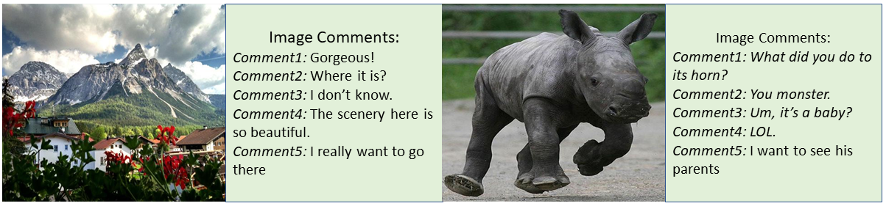
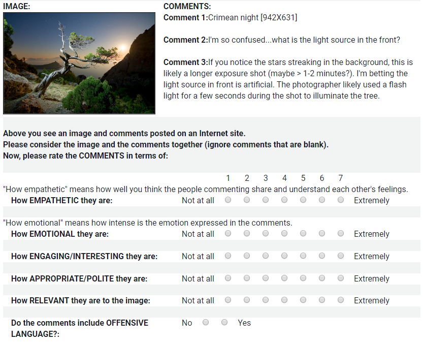

NICE: Neural Image Commenting Evaluation with an Emphasis on Emotion and Empathy
Introduction

Emotion and empathy are examples of human qualities lacking in many human-machine interactions. The goal of our work is to generate engaging dialogue grounded in a user-shared image with increased emotion and empathy while minimizing socially inappropriate or offensive outputs. We release the Neural Image Commenting Evaluation (NICE) dataset consisting of almost two million images and their corresponding, human-generated comments, as well as a set of baseline models and over 28,000 human annotated samples. Instead of relying on manually labeled emotions, we also use automatically generated linguistic representations as a source of weakly supervised labels. Based on the annotations, we define two different task settings on the NICE dataset.
The NICE dataset consists of over 2M images, and 7M image-comment pairs (English) split into training, validation, and testing sets. In this section, we first describe how the dataset was collected, and then present some of its unique characteristics. Our goal is to simulate natural comments from humans, which requires a large volume of data. Therefore, we scraped 10 million image-comment pairs from licensed website. Each thread was required to start with an image and contain at least one comment. We applied filters to both the images and comments to remove sensitive content such as adult or pornographic content, racy and gory content, non-English language, ethnic-religious content, and some sensitive content (including people's name, documents invoices, bills, financial reports) or other potentially offensive or contentious material (including inappropriate references to violence, crime and illegal substances). After filtering, the number of images of the dataset was reduced to 2,233,926 samples and the number of image-comment pairs was reduced to 7,304,680 samples. This filtering was performed with pre-trained classifiers. We believe that this dataset presents a valuable resource for the community. Below we highlight some of the properties of the data.
Data Cleaning: It took several researchers multiple weeks to remove sensitive content for both image and text filtering. For example, we used the ``Microsoft Adult Filtering API'' to remove adult, racy and gory images, we use the ``Detecting image types API'' to remove clip art and line drawings, we use the ``Optical Character Recognition (OCR) API'' to remove printed or handwritten text from the images, such as photos of license plates or containers with serial numbers, as well as from documents invoices, bills, financial reports, articles, and more. We also removed people’s names, politically sensitive language, ethnic-religious content, or other potentially offensive material (including inappropriate references to violence, crime and illegal substances) as the similar filter API for language cleaning. The last step of filtering, we make sure that NICE dataset had no more than 5 corresponding comments for each image, and there are not more than 6 different dialogue threads for the same image. In NICE-Setting II, after annotation, we filter out image-comments pairs without affect feature or dialogue topic from dialogue thread. We will keep cleaning and maintaining it in future.
Task Definition
Task Setting I
Task Formulation: We define NICE-Setting I as generating a set of comments for an image. Formally, the generation task as follows: given an image I, and N comments C1, ..., Cn. Systems aim to generate the comment Ck, where k is from 1 to N using the current state information S(Ck | I, C1,...,Ck-1).
Task Setting II
Task Formulation: We define the NICE-Setting II as controllable generation in response to an image, similar to a dialog response in a social conversation setting in order to maximize user engagement and eventually form long-term, emotional connections with users. We formalize the generation task as follows: each sample of this dataset has an image I, a comment topic H of the whole dialogue, and N comments C1, ..., Cn with corresponding affect distribution features A1, ..., An. Systems aim to generate the comment Ck using the current state information S(I, H, C1,...,Ck-1, Ak), which contains the input image I, comment topic H, the comments history (C1, ..., Ck-1), and is conditioned on the affect feature Ak.
Evaluation
Generated comments can be evaluated automatically on three aspects: token matching, semantic similarity, and diversity. As image comments are different from traditional text generation task, generating same text as ground truth is not our goal. We propose three aspects to show the quality of generated comments. We also provide a evaluation set with over 28000 human annotated labels. We suggest users to refer them for human evaluation.
Token Matching: Token matching aspect aims to evaluate whether the generated comments are similar as ground-truth comments on token level. Token matching quality is evaluated by Bleu score, ROUGE score, and CIDEr score.
Semantic Similarity: Semantic Similarity aims to evalute whether the generated comments have similar sematnic meanings or emotions. Semantic Similarity is evaluated by SPICE and BertScore (BertP, BertR, BertF1).
Diversity: Image comments can be diverse from different people's persepectives. Diversity is evaluted by Entropy and Distinct score.
Human Evaluation: For some qualities (e.g., empathy or social appropriateness), there are currently no automated metrics for evaluating dialogue generation models. However, these qualities are particularly important for our data in our task. Therefore, we had human labelers code a large set (over 28,000) of images and comments. During each Human Intelligence Task (HIT), we showed a labeler an image accompanied by a comment from a single thread associated with the image. As a single image can have multiple comment threads we randomly selected one comment thread for each image per HIT. A screenshot of the labeling task is shown in the image below.The labeler was asked to rate how socially appropriate, empathetic, emotional, engaging and relevant to the image the comments were. Each rating was performed on a scale of 1 (not at all) to 7 (extremely). They were also asked whether the text featured offensive content (No/Yes). In total, 28,392 image and comment samples were labeled. Each sample was labeled by one labeler, but due to the large number of samples we had a total of 180 labelers, each who labeled an average of 156 images. We compensated labelers at a calculated rate of $15 per hour. When users perform human evaluation, we suggest the same evluation method for fair comparison.

Publications
The paper for this dataset has published in NeurIPS20 Human in the loop Dialogue systems: NeurIPS 2020 workshop version
NICE Dataset Download
Download Data Collection Tools: The data collection and filtering tools can be downloaded here.
User License Agreement (EULA): You should complete an end user license agreement (EULA) before accessing the dataset. The EULA will be posted soon once the data releasing process is finished.
Download Data: Microsoft Research has worked with legal teams on the data release process. Data downloading will come soon and the button below is not working currently.
Download NICE DatasetExternal Resources
External researches that use NICE dataset is listed below (The list will be update):